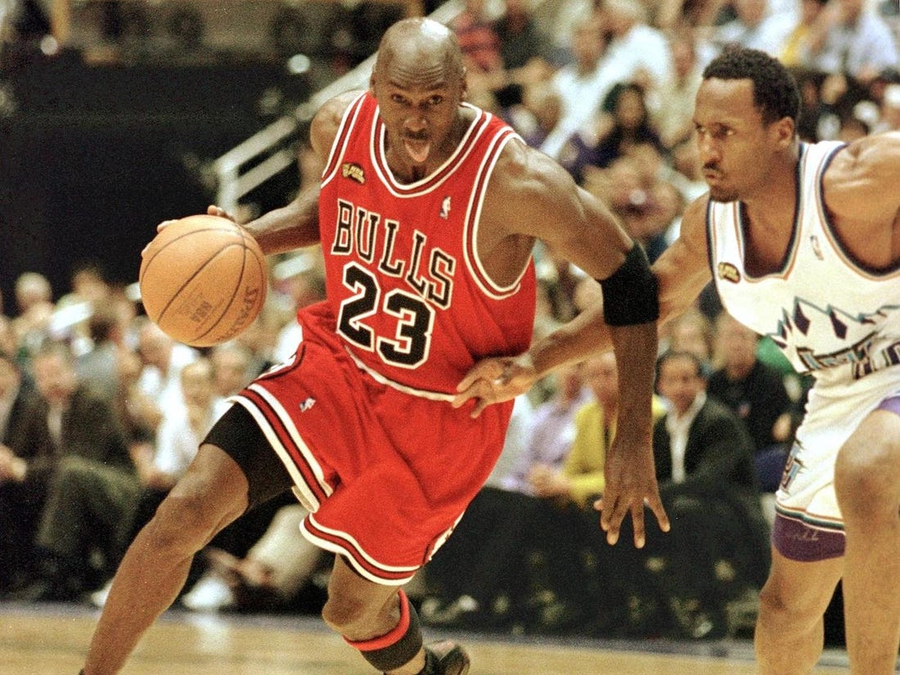
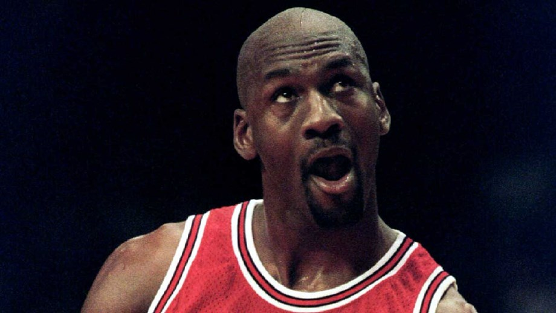
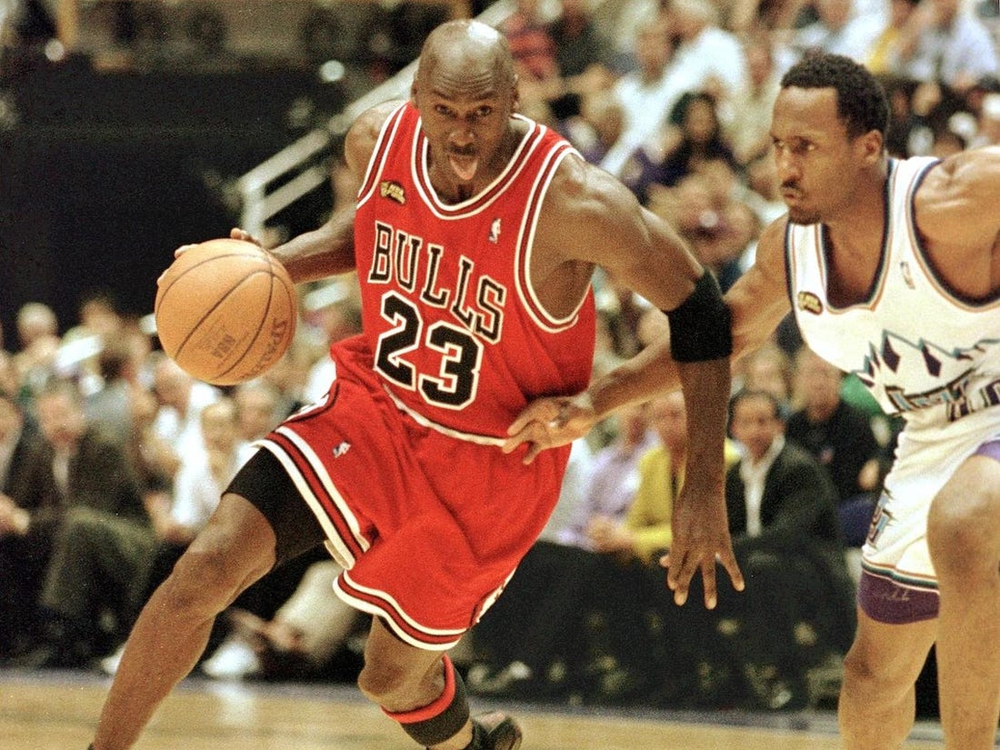
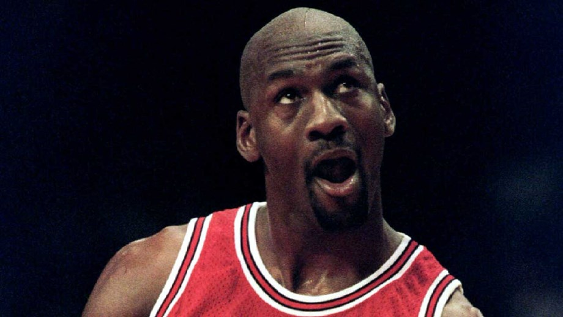

Michael Jordan
 




The man who could soar
Michael Jeffrey Jordan (born February 17, 1963), also known by his initials MJ,[4] is an American former professional basketball player and the principal owner of the Charlotte Hornets of the National Basketball Association (NBA). He played 15 seasons in the NBA, winning six championships with the Chicago Bulls. His biography on the official NBA website states: "By acclamation, Michael Jordan is the greatest basketball player of all time."[5] He was integral in helping to popularize the NBA around the world in the 1980s and 1990s,[6] becoming a global cultural icon in the process.[7]
Jordan played college basketball for three seasons under coach Dean Smith with the North Carolina Tar Heels. As a freshman, he was a member of the Tar Heels' national championship team in 1982. Jordan joined the Bulls in 1984 as the third overall draft pick, and quickly emerged as a league star, entertaining crowds with his prolific scoring while gaining a reputation as one of the game's best defensive players.[8] His leaping ability, demonstrated by performing slam dunks from the free throw line in Slam Dunk Contests, earned him the nicknames "Air Jordan" and "His Airness". Jordan won his first NBA championship with the Bulls in 1991, and followed that achievement with titles in 1992 and 1993, securing a "three-peat". Jordan abruptly retired from basketball before the 1993–94 NBA season to play Minor League Baseball, but returned to the Bulls in March 1995 and led them to three more championships in 1996, 1997, and 1998, as well as a then-record 72 regular-season wins in the 1995–96 NBA season. He retired for a second time in January 1999 but returned for two more NBA seasons from 2001 to 2003 as a member of the Washington Wizards.
Jordan's individual accolades and accomplishments include six NBA Finals Most Valuable Player (MVP) Awards, ten scoring titles (both all-time records), five MVP Awards, ten All-NBA First Team designations, nine All-Defensive First Team honors, fourteen NBA All-Star Game selections, three All-Star Game MVP Awards, three steals titles, and the 1988 NBA Defensive Player of the Year Award. He holds the NBA records for career regular season scoring average (30.12 points per game) and career playoff scoring average (33.45 points per game). In 1999, he was named the 20th century's greatest North American athlete by ESPN, and was second to Babe Ruth on the Associated Press' list of athletes of the century. Jordan was twice inducted into the Naismith Memorial Basketball Hall of Fame, once in 2009 for his individual career and again in 2010 as part of the 1992 United States men's Olympic basketball team ("The Dream Team"). He became a member of the FIBA Hall of Fame in 2015.
One of the most effectively marketed athletes of his generation,[6] Jordan is also known for his product endorsements. He fueled the success of Nike's Air Jordan sneakers, which were introduced in 1984 and remain popular today.[9] Jordan also starred as himself in the 1996 film Space Jam. He became part-owner and head of basketball operations for the Charlotte Bobcats (now Hornets) in 2006, and bought a controlling interest in 2010. In 2014, Jordan became the first billionaire player in NBA history. With a net worth of $2.1 billion, he is the fourth-richest African American, behind Robert F. Smith, David Steward, and Oprah Winfrey.